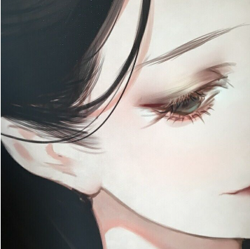

<ion-header>
  
</ion-header>

<ion-content padding>
<div class="video01">
  <video  class="v1"  controls id="video1" > 
    <source src="../../assets/imgs/long.mp4" type="video/mp4">
  </video>
  <div class="content">
    <p>朱一龙成名作</p>
    <HR>
    <span class="name">蛤蛤蛤</span>
    <ion-icon ios="ios-thumbs-up" md="md-thumbs-up" class="zan"></ion-icon>1367 
    <ion-icon ios="ios-chatboxes" md="md-chatboxes" class="pinglun"></ion-icon>567
    <ion-icon md="md-more" class="more"></ion-icon>
  </div>
</div>
<HR>
<div class="video02">
  <video  controls >
    <source src="../../assets/imgs/long.mp4" type="video/mp4" >
  </video>
  <div class="content">
    <p>朱一龙饰演冯豆子</p>
    <HR>
    <span>蛤蛤蛤</span>
    <ion-icon ios="ios-thumbs-up" md="md-thumbs-up" class="zan" (click)="zan()" id="ion1"> </ion-icon>1367 
    <ion-icon ios="ios-chatboxes" md="md-chatboxes" class="pinglun"></ion-icon>567
    <ion-icon md="md-more" class="more"></ion-icon>
  </div>
</div>

</ion-content>
